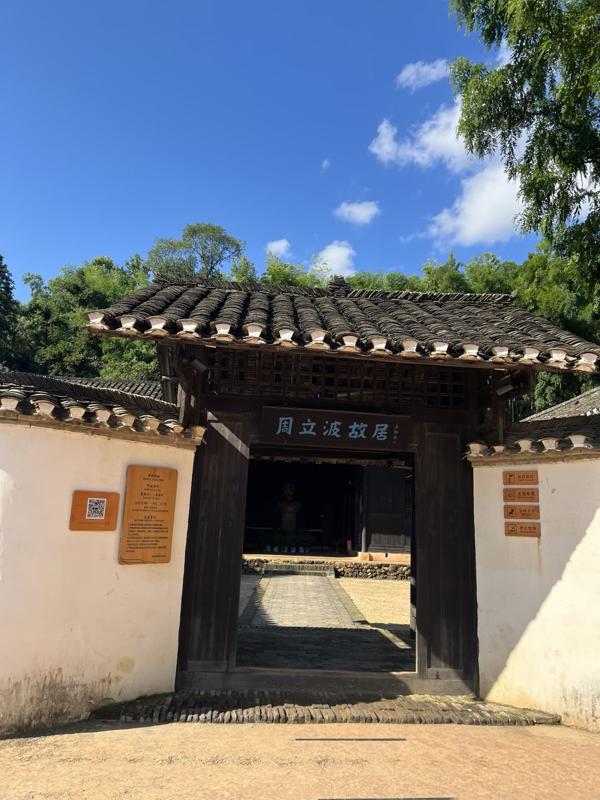

从土地与日常，到精神与传承
在周立波的笔下，山乡的变化首先是一场物质与制度的剧变：土地关系被重组，旧秩序被打破，新的生活方式开始替代旧日的节奏与习俗。
但真正让作品穿越时代的，是它所承载的文化意味。被重写的家庭关系、被重新定义的邻里秩序、被唤醒的集体意识，都是中华文化在变迁中延续的脉络。
文化不是被保存的陈迹，而是在时代潮流中被重新解释
乡土文化并非一成不变的古老符号，而是在社会变革中不断自我更新。旧有的伦理观念、地方习俗与共同记忆，虽然被新的时代力量冲击，却并未真正消失，而是在新的生活形式中继续生长。
所以，所谓“文脉赓续”，不是简单地守住旧物，而是在变局中保住精神的根脉，让一代代人的生活经验被继续传递下去。
文化演变的三个层面
- 从家族伦理走向集体生活
- 从地方习俗走向时代话语
- 从物质改造走向精神传承
从“变”到“续”：文化如何在时代中延续
旧秩序中的乡土根脉
传统乡村以家族、邻里、礼俗和土地构成深厚的共同记忆，是文化延续的起点。
变革中的价值重塑
时代巨变打断了旧有秩序，也逼迫人们重新思考身份、责任与共同体的意义。
赓续中的精神回望
真正的文脉传承，不是停留在过去，而是在新的历史条件下继续发出温度与力量。

故居所见，不只是历史，更是文化的延续
从周立波的创作与故居的空间气息中，我们能够感受到一种更深的精神结构：旧时乡土的温度，现代时代的力量，和中华文化在变迁中仍能自我延续的韧性。
这也是这个展陈最值得被认真看见的一点——文化不是被封存，而是被不断讲述、被重新理解、并在后续世代中继续生长。
“真正的文化传承，不是静止地保存旧物，而是在风雨中把根留住，让精神继续向前。”